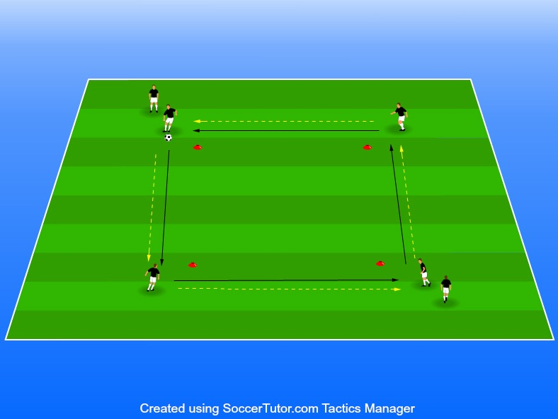

Öka tempot i passningar, mottagningar och få röra mycket boll
5-8 spelare rekommenderar
Ställ upp en kvadrat 1. Nivåindela gärna spelarna i denna övning.
Förklara tydligt att bollen alltid ska runt konan, helst ett tillslag för att ta med bollen och ett tillslag för att passa bollen.Det är däremot bättre att ta fler tillslag om man känner att individerna inte kan behärska ett sånt högt tempo.
Viktigt att spelare alltid tar med bollen med bortre foten oavsett håll. Detta pga att spelarna ska lära sig ta med bollen i fart och inte döda den. Om vi tar emot bollen med bortre foten går det mycket snabbare att få med den framåt i farten.
Efter spelarna passat bollen följer de med och ställer sig vid konan dit de passade. Se bilden nedan för uppställning av koner och spelare samt hur bollen ska röra sig.
Det finns tre variationer på denna övning där nummer 3 är den svåraste och 1 den lättaste. Den enklaste formen av denna övning är bara att passa bollen och följa med som under vid variation 1.
Förklara tydligt att det är bäst att ta med bollen med den yttre foten då det är lättare att få med den i steget.
För att båda fötterna ska användas så ser vi till att byta håll efter ungefär 2-3 minuter. ➜